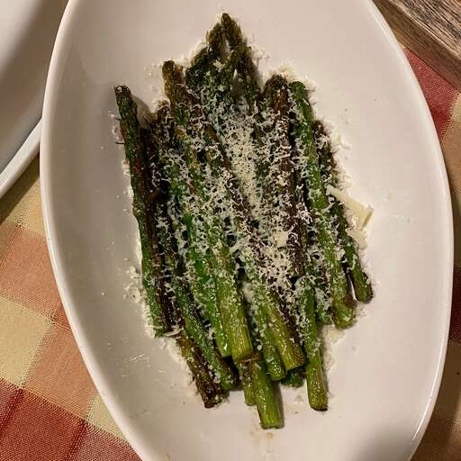

Description
Grilled asparagus is simple to make, but it lets you enjoy the natural flavor of your veggies.
Fresh asparagus spears are coated with a bit of oil, salt, and pepper and cooked quickly over
high heat on the grill. That's it!
Ingredients
- 1 lb fresh asparagus spears, trimmed
- 1 tbsp olive oil
- salt and pepper to taste
- parmesan cheese for garnish
Steps
- preheat pan or skillet for high heat and lightly oil the grate.
- Lightly coat the asapagus spears with olive oil. Season with salt and pepper to taste.
- cook asparagus on the preheated skillet, turning often until lightly charred and fork-tender
about 3 to 5 minutes.
Back